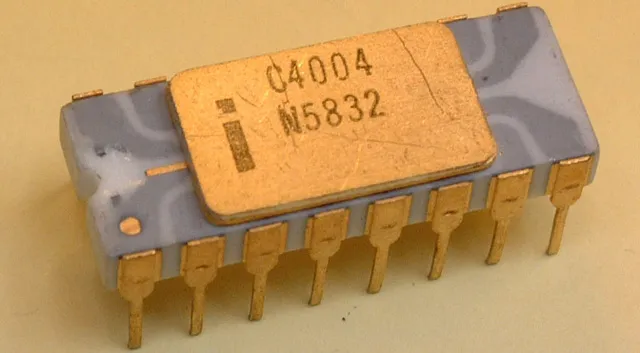

Les premiers ordinateurs électroniques ont été construits dans les années 1940 et 1950.
Ces machines étaient souvent très volumineuses et nécessitaient des salles entières
pour être installées.

Les processeurs utilisés dans ces machines étaient très différents de ceux que nous connaissons aujourd'hui.
Ils étaient composés de tubes à vide, qui étaient des dispositifs électroniques qui permettaient de contrôler le flux de courant électrique.
Les processeurs de cette époque étaient extrêmement lents, ne pouvant réaliser que quelques milliers d'opérations par seconde.

(Le Premier Micro-Processeur au monde, crée par Intel)